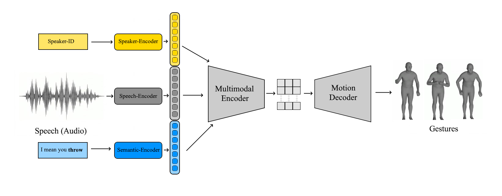
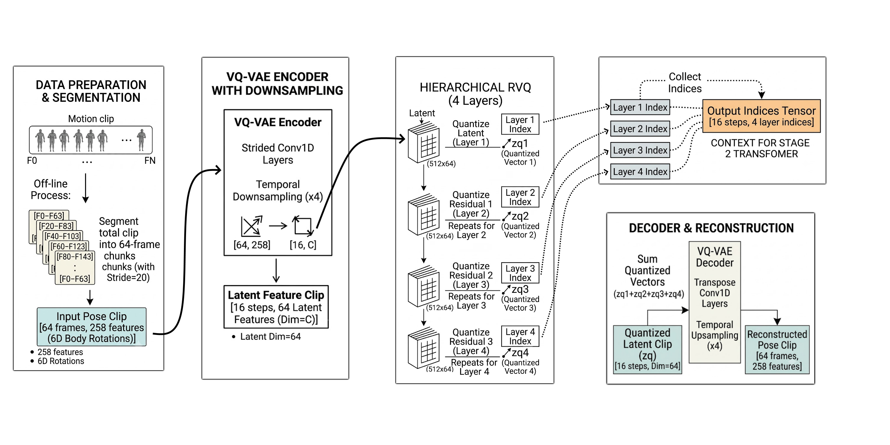
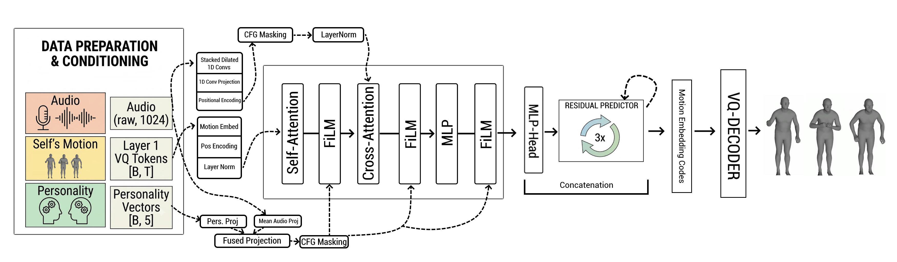

Project Abstract
Traditional co-speech gesture generation relies on non-causal models such as diffusion or bidirectional transformers, which require future audio and thus prevent real-time deployment. Existing models are also mostly optimized for single-speaker settings, failing to capture the dynamic feedback loops of dyadic interactions. This work introduces a context-aware, style-conditioned auto-regressive framework that generates, upper-body gestures frame-by-frame on-demand. The approach uses a decoupled, two-stage pipeline trained on the large-scale Seamless Interaction dataset. In Stage 1, an upper-body RVQ-VAE compresses SMPL-H joint rotations, into a compact, hierarchical vocabulary of motion tokens. Training on a filtered, high-motion 13.1 hour subset avoids codebook collapse and provides a natural denoising prior. In Stage 2, a lightweight decoder-only causal transformer, predicts these motion tokens step-by-step. To avoid the quadratic self-attention costs of flattened sequences, a decoupled prediction protocol is implemented: the transformer auto-regressively predicts the broad posture (Layer 1), while a cross-attention residual predictor resolves detailed hand and finger movements (Layers 2–4). To include contextual features, the transformer uses FiLM layers to integrate personality vectors and audio volume, while cross-attention over speaker and partner audio streams keeps timing in sync. An open-source, headless web-based rendering pipeline is also introduced to speed up visual evaluation. Benchmarks and ablation studies show that the proposed baseline model, generates co-speech movements matching conversational rhythms in a strictly causal, streaming manner.
Framework Overview & Contributions
The project addresses the limitations of non-causal systems by handling data representations, model designs, and diagnostics across four core pillars:
1. Data Preprocessing Pipeline
Stabilizes raw multi-vendor dyadic recordings using programmatic out-of-screen boundary filtering, lower-body kinematic masking to eliminate drift, local velocity selection, and anticipatory temporal padding.
2. Stage 1: Spatial Motion Representation
Compresses continuous high-dimensional upper-body rotations into a discrete, structured codebook vocabulary via a Hierarchical RVQ-VAE setup acting as a spatial denoiser.
3. Stage 2: Causal Sequence Generation
Models the quantized motion primitives as a causal sequence using a decoder-only auto-regressive transformer with zero look-ahead window, utilizing joint latent supervision to mitigate exposure bias.
4. Rendering Pipeline
A functional diagnostic visualization dashboard constructed to process native skeleton topologies, replacing manual tracking cycles for explicit qualitative verification.

Stage 1: Spatial Representation & Reconstruction Results
Stage 1 extracts discrete codes from localized joint movements, defining an expressive codebook that serves as the spatial basis for the generative tasks. Below are the actual reconstruction results comparing ground-truth targets directly against the autoencoder codebook mappings.

Stage 2: Causal Sequence Generation Architecture
The sequence framework treats gesture synthesis as an auto-regressive prediction task using a decoder-only transformer. It conditions on structural voice activity indicators, continuous style vectors, and cross-modal audio sequences chunk-by-chunk to enforce temporal limits matching natural responsive communication timelines.
